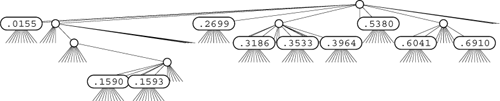
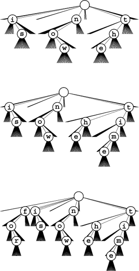
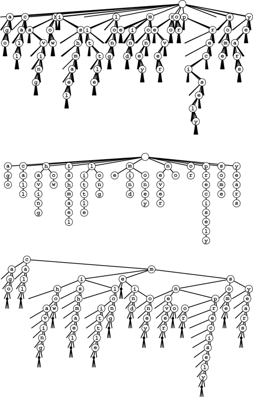
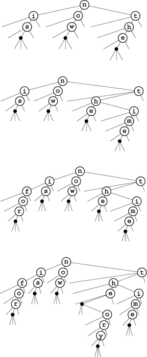
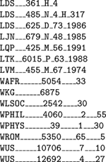
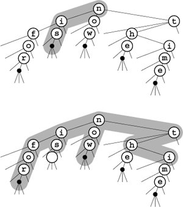

C++ Programming Robert Sedgewick - Princeton University Addison Wesley Professional Algorithms in C++, Parts 1–4: Fundamentals, Data Structure, Sorting, Searching, Third Edition C++ Programming Robert Sedgewick - Princeton University Addison Wesley Professional Algorithms in C++, Parts 1–4: Fundamentals, Data Structure, Sorting, Searching, Third Edition
15.4. Multiway Tries and TSTs
For radix sorting, we found that we could get a significant improvement in speed by considering more than 1 bit at a time. The same is true for radix search: By examining r bits at a time, we can speed up the search by a factor of r. However, there is a catch that makes it necessary for us to be more careful in applying this idea than we had to be for radix sorting. The problem is that considering r bits at a time corresponds to using tree nodes with R = 2r links, and that can lead to a considerable amount of wasted space for unused links.
In the (binary) tries of Section 15.2, the nodes corresponding to key bits have two links: one for the case when the key bit is 0, and the other for the case when the key bit is 1. The appropriate generalization is to R-ary tries, where we have nodes with R links corresponding to key digits, one for each possible digit value. Keys are stored in leaves (nodes with all links null). To search in an R-way trie, we start at the root and at the leftmost key digit, and use the key digits to guide us down the tree. We go down the ith link (and move to the next digit) if the digit value is i. If we reach a leaf, it contains the only key in the trie with leading digits corresponding to the path that we have traversed, so we can compare that key with the search key to determine whether we have a search hit or a search miss. If we reach a null link, we know that we have a search miss, because that link corresponds to a leading-digit pattern not found in any keys in the trie. Figure 15.14 shows a 10-way trie that represents a sample set of decimal numbers. As we discussed in Chapter 10, numbers typically seen in practice are distinguished with relatively few trie nodes. This same effect for more general types of keys is the basis for a number of efficient search algorithms.
This figure depicts the trie that distinguishes the set of numbers (see Figure 12.1). Each node has 10 links (one for each possible digit). At the root, link 0 points to the trie for keys with first digit 0 (there is only one); link 1 points to the trie for keys with first digit 1 (there are two), and so forth. None of these numbers has first digit 4, 7, 8, or 9, so those links are null. There is only one number for each of the first digits 0, 2, and 5, so there is a leaf containing the appropriate number for each of those digits. The rest of the structure is built recursively, moving one digit to the right.

Before doing a full symbol-table implementation with multiple node types and so forth, we begin our study of multiway tries by concentrating on the existence-table problem, where we have only keys (no records or associated information) and want to develop algorithms to insert a key into a data structure and to search the data structure to tell us whether or not a given key has been inserted. To use the same interface that we have been using for more general symbol-table implementations, we adopt the convention that the search function returns nullItem for a search miss and a dummy item containing the search key for a search hit. This convention simplifies the code and clearly exposes the structure of the multiway tries that we shall be considering. In Section 15.5, we shall discuss more general symbol-table implementations, including string indexing.
Definition 15.2. The existence trie corresponding to a set of keys is defined recursively as follows: The trie for an empty set of keys is a null link; and the trie for a nonempty set of keys is an internal node with links referring to the trie for each possible key digit, with the leading digit considered to be removed for the purpose of constructing the subtrees|
For simplicity, we assume in this definition that no key is the prefix of another. Typically, we enforce this restriction by ensuring that the keys are distinct and either are of fixed length or have a termination character with value NULLdigit, a sentinel that is used for no other purpose. The point of this definition is that we can use existence tries to implement existence tables, without storing any information within the trie; the information is all implicitly defined within the trie structure. Each node has R + 1 links (one for each possible character value plus one for NULLdigit), and no other information. To search, we use the digits in the key to guide us down the trie. If we reach the link to NULLdigit at the same time that we run out of key digits, we have a search hit; otherwise we have a search miss. To insert a new key, we search until we reach a null link, then add nodes for each of the remaining characters in the key. Figure 15.15 is an example of a 27-way trie; Program 15.7 is an implementation of the basic (multiway) existence-trie search and insert procedures.
The 26-way trie for the words now, is, and the (top) has nine nodes: the root plus one for each letter. The nodes are labeled in these diagrams, but we do not use explicit node labels in the data structure, because each node label can be inferred from the position of the link to it in its parents' link array. To insert the key time, we branch off the existing node for t and add new nodes for i, m, and e (center); to insert the key for, we branch off the root and add new nodes for f, o, and r.

|
If the keys are of fixed length and are distinct, we can dispense with the link to the terminal character and can terminate searches when we reach the key length (see Exercise 15.55). We have already seen an example of this type of trie when we used tries to describe MSD sorting for fixed-length keys (Figure 10.10).
In one sense, this pure abstract representation of the trie structure is optimal, because it can support the search operation in time proportional to the length of a key and in space proportional to the total number of characters in the key in the worst case. But the total amount of space used could be as high as nearly R links for each character, so we seek improved implementations. As we saw with binary tries, it is worthwhile to consider the pure trie structure as a particular representation of an underlying abstract structure that is a well-defined representation of our set of keys, and then to consider other representations of the same abstract structure that might lead to better performance.
|
Definition 15.3. A multiway trie is a multiway tree that has keys associated with each of its leaves, defined recursively as follows: The trie for an empty set of keys is a null link; the trie for a single key is a leaf containing that key; and the trie for a set of keys of cardinality greater than one is an internal node with links referring to tries for keys with each possible digit value, with the leading digit considered to be removed for the purpose of constructing the subtrees|
We assume that keys in the data structure are distinct and that no key is the prefix of another. To search in a standard multiway trie, we use the digits of the key to guide the search down the trie, with three possible outcomes. If we reach a null link, we have a search miss; if we reach a leaf containing the search key, we have a search hit; and if we reach a leaf containing a different key, we have a search miss. All leaves have R null links, so different representations for leaf nodes and non-leaf nodes are appropriate, as mentioned in Section 15.2. We consider such an implementation in Chapter 16, and we shall consider another approach to an implementation in this chapter. In either case, the analytic results from Section 15.3 generalize to tell us about the performance characteristics of standard multiway tries.
Program 15.7. Existence-trie search and insertion|
This implementation of search and insert for multiway tries stores the keys implicitly within the structure of the trie. Each node contains R pointers to the next level down the trie. We follow the ith link at level t when the tth digit of the key is i. The search function returns a dummy item containing the key given as the argument if it is in the table, and returns nullItem otherwise. Alternatively, we could change the interface to use only type Key, or implement a cast from Item to Key in our item class.
private:
struct node
{ node **next;
node()
{ next = new node*[R];
for (int i = 0; i < R; i++) next[i] = 0; }
};
typedef node *link;
link head;
Item searchR(link h, Key v, int d)
{ int i = digit(v, d);
if (h == 0) return nullItem;
if (i == NULLdigit)
{ Item dummy(v); return dummy; }
return searchR(h->next[i], v, d+1);
}
void insertR(link& h, Item x, int d)
{ int i = digit(x.key(), d);
if (h == 0) h = new node;
if (i == NULLdigit) return;
insertR(h->next[i], x, d+1);
}
public:
ST(int maxN)
{ head = 0; }
Item search(Key v)
{ return searchR(head, v, 0); }
void insert(Item x)
{ insertR(head, x, 0); }
|
Property 15.6. Search or insertion in a standard R-ary trie requires about log RN byte comparisons on the average in a tree built from N random bytestrings. The number of links in an R-ary trie built from N random keys is about RN/ ln R. The number of byte comparisons for search or insertion is no more than the number of bytes in the search key|
These results generalize those in Properties 15.3 and 15.4. We can establish them by substituting R for 2 in the proofs of those properties. As we mentioned, however, extremely sophisticated mathematics is involved in the precise analysis of these quantities.
|
The performance characteristics listed in Property 15.6 represent an extreme example of a time–space tradeoff. On the one hand, there are a large number of unused null links—only a few nodes near the top use more than a few of their links. On the other hand, the height of a tree is small. For example, suppose that we take the typical value R = 256 and that we have N random 64-bit keys. Property 15.6 tells us that a search will take (lg N)/8 character comparisons (8 at most) and that we will use fewer than 47N links. If plenty of space is available, this method provides an extremely efficient alternative. We could cut the search cost to 4 character comparisons for this example by taking R = 65536, but that would require over 5900 links.
We shall return to standard multiway tries in Section 15.5; in the remainder of this section, we shall consider an alternative representation of the tries built by Program 15.7: the ternary search trie (TST), which is illustrated in its full form in Figure 15.16. In a TST, each node has a character and three links, corresponding to keys whose current digits are less than, equal to, or greater than the node's character. Using this arrangement is equivalent to implementing trie nodes as binary search trees that use as keys the characters corresponding to non-null links. In the standard existence tries of Program 15.7, trie nodes are represented by R + 1 links, and we infer the character represented by each non-null link by its index. In the corresponding existence TST, all the characters corresponding to non-null links appear explicitly in nodes—we find characters corresponding to keys only when we are traversing the middle links.
These figures show three different representations of the existence trie for the 16 words call me ishmael some years ago never mind how long precisely having little or no money: The 26-way existence trie (top); the abstract trie with null links removed (center); and the TST representation (bottom). The 26-way trie has too many links, but the TST is an efficient representation of the abstract trie. The top two tries assume that no key is the prefix of another. For example, adding the key not would result in the key no being lost. We can add a null character to the end of each key to correct this problem, as illustrated in the TST at the bottom.

|
The search algorithm for existence TSTs is so straightforward as nearly to write itself; the insertion algorithm is slightly more complicated, but mirrors directly insertion in existence tries. To search, we compare the first character in the key with the character at the root. If it is less, we take the left link; if it is greater, we take the right link; and if it is equal, we take the middle link and move to the next key character. In each case, we apply the algorithm recursively. We terminate with a search miss if we encounter a null link or if we encounter the end of the search key before encountering NULLdigit in the tree, and we terminate with a search hit if we traverse the middle link in a node whose character is NULLdigit. To insert a new key, we search, then add new nodes for the characters in the tail of the key, just as we did for tries. Program 15.8 gives the details of the implementation of these algorithms, and Figure 15.17 has TSTs that correspond to the tries in Figure 15.15.
An existence TST has one node for each letter, but only 3 children per node, rather than 26. The top three trees in this figure are the RSTs corresponding to the insertion example in Figure 15.15, with the additional change that an end-of-key character is appended to each key. We can then remove the restriction that no key may be a prefix of another, so, for example, we can insert the key theory (bottom).

Continuing the correspondence that we have been following between search trees and sorting algorithms, we see that TSTs correspond to three-way radix sorting in the same way that BSTs correspond to quicksort, tries correspond to binary quicksort, and M-way tries correspond to M-way radix sorting. Figure 10.13, which describes the recursive call structure for three-way radix sort, is a TST for that set of keys. The null-links problem for tries corresponds to the empty-bins problem for radix sorting; three-way branching provides an effective solution to both problems.
We can make TSTs more efficient in their use of space by putting keys in leaves at the point where they are distinguished and by eliminating one-way branching between internal nodes as we did for patricia. At the end of this section, we examine an implementation based on the former change.
Program 15.8. Existence-TST search and insertion|
This code implements the same abstract trie algorithms as Program 15.7, but each node contains one digit and three links: one each for keys whose next digit is less than, equal to, or greater than the corresponding digit in the search key, respectively.
private:
struct node
{ Item item; int d; node *l, *m, *r;
node(int k)
{ d = k; l = 0; m = 0; r = 0; }
};
typedef node *link;
link head;
Item nullItem;
Item searchR(link h, Key v, int d)
{ int i = digit(v, d);
if (h == 0) return nullItem;
if (i == NULLdigit)
{ Item dummy(v); return dummy; }
if (i < h->d) return searchR(h->l, v, d);
if (i == h->d) return searchR(h->m, v, d+1);
if (i > h->d) return searchR(h->r, v, d);
}
void insertR(link& h, Item x, int d)
{ int i = digit(x.key(), d);
if (h == 0) h = new node(i);
if (i == NULLdigit) return;
if (i < h->d) insertR(h->l, x, d);
if (i == h->d) insertR(h->m, x, d+1);
if (i > h->d) insertR(h->r, x, d);
}
public:
ST(int maxN)
{ head = 0; }
Item search(Key v)
{ return searchR(head, v, 0); }
void insert(Item x)
{ insertR(head, x, 0); }
|
Property 15.7. A search or insertion in a full TST requires time proportional to the key length. The number of links in a TST is at most three times the number of characters in all the keys|
In the worst case, each key character corresponds to a full R-ary node that is unbalanced, stretched out like a singly linked list. This worst case is extremely unlikely to occur in a random tree. More typically, we might expect to do ln R or fewer byte comparisons at the first level (since the root node behaves like a BST on the R different byte values) and perhaps at a few other levels (if there are keys with a common prefix and up to R different byte values on the character following the prefix), and to do only a few byte comparisons for most characters (since most trie nodes are sparsely populated with non-null links). Search misses are likely to involve only a few byte comparisons, ending at a null link high in the trie, and search hits involve only about one byte comparison per search key character, since most of them are in nodes with one-way branching at the bottom of the trie.
Actual space usage is generally less than the upper bound of three links per character, because keys share nodes at high levels in the tree. We refrain from a precise average-case analysis because TSTs are most useful in practical situations where keys neither are random nor are derived from bizarre worst-case constructions.
|
The prime virtue of using TSTs is that they adapt gracefully to irregularities in search keys that are likely to appear in practical applications. There are two main effects. First, keys in practical applications come from large character sets, and usage of particular characters in the character sets is far from uniform—for example, a particular set of strings is likely to use only a small fraction of the possible characters. With TSTs, we can use a 128- or 256-character encoding without having to worry about the excessive costs of nodes with 128- or 256-way branching, and without having to determine which sets of characters are relevant. Character sets for non-Roman alphabets can have thousands of characters—TSTs are especially appropriate for string keys that consist of such characters. Second, keys in practical applications often have a structured format, differing from application to application, perhaps using only letters in one part of the key, only digits in another part of the key, and special characters as delimiters (see Exercise 15.72). For example, Figure 15.18 gives a list of library call numbers from an online library database. For such keys, some of the trie nodes might be represented as unary nodes in the TST (for places where all keys have delimiters); some might be represented as 10-node BSTs (for places where all keys have digits); and still others might be represented as 26-node BSTs (for places where all keys have letters). This structure develops automatically, without any need for special analysis of the keys.
These keys from an online library database illustrate the variability of the structure found in string keys in applications. Some of the characters may appropriately be modeled as random letters, some may be modeled as random digits, and still others have fixed value or structure.

A second practical advantage of TST-based search over many other algorithms is that search misses are likely to be extremely efficient, even when the keys are long. Often, the algorithm uses just a few byte comparisons (and chases a few pointers) to complete a search miss. As we discussed in Section 15.3, a search miss in a hash table with N keys requires time proportional to the key length (to compute the hash function), and at least lg N key comparisons in a search tree. Even patricia requires lg N bit comparisons for a random search miss.
Program 15.9. Partial-match searching in TSTs|
With judicious use of multiple recursive calls, we can find close matches in a TST structure, as shown in this program for printing all strings in the data structure that match a search string with some characters unspecified (indicated by asterisks). We are not implementing a search ADT function or using abstract items here, so we use explicit C-style string-processing primitives.
private:
char wordmaxW;
void matchR(link h, char *v, int i)
{
if (h == 0) return;
if ((*v == 0) && (h->d == 0))
{ wordi = 0; cout << word << " "; }
if ((*v == '*') || (*v == h->d))
{ wordi = h->d; matchR(h->m, v+1, i+1); }
if ((*v == '*') || (*v < h->d))
matchR(h->l, v, i);
if ((*v == '*') || (*v > h->d))
matchR(h->r, v, i);
}
public:
void match(char *v)
{ matchR(head, v, 0); }
|
Table 15.2 gives empirical data in support of the observations in the previous two paragraphs.
A third reason that TSTs are attractive is that they support operations more general than the symbol-table operations that we have been considering. For example, Program 15.9 gives a program that allows particular characters in the search key to be unspecified, and prints all keys in the data structure that match the specified digits of the search key. An example is depicted in Figure 15.19. Obviously, with a slight modification, we can adapt this program to visit all the matching keys in the way that we do for sort, rather than just to print them (see Exercise 15.58).
To find all keys in a TST matching the pattern i* (top), we search for i in the BST for the first character. In this example, we find is (the only word that matches the pattern) after two one-way branches. For a less restrictive pattern such as *o* (bottom), we visit all nodes in the BST for the first character, but only those corresponding to o for the second character, eventually finding for and now.

Several other similar tasks are easy to handle with TSTs. For example, we can visit all keys in the data structure that differ from the search key in at most one digit position (see Exercise 15.59). Operations of this type are expensive or impossible with other symbol-table implementations. We shall consider in detail these and many other problems where we do not insist on exact matches in a string search, in Part 5.
Patricia offers several of the same advantages; the main practical advantage of TSTs over patricia tries is that the former access key bytes rather than key bits. One reason that this difference represents an advantage is that machine operations for this purpose are found in many machines, and C++ provides direct access to bytes in C-style character strings. Another reason is that, in some applications, working with bytes in the data structure naturally reflects the byte orientation of the data itself in some applications—for example, in the partial-match search problem discussed in the previous paragraph (although, as we shall see in Chapter 18, we can speed up partial-match search with judicious use of bit access).
To eliminate one-way branching in TSTs, we note that most of the one-way branching occurs at the tail ends of keys, and does not occur if we evolve to a standard multiway trie implementation, where we keep records in leaves that are placed in the highest level of the trie that distinguishes the keys. We also can maintain a byte index in the same manner as in patricia tries (see Exercise 15.65), but will omit this change, for simplicity. The combination of multiway branching and the TST representation by themselves is quite effective in many applications, but patricia-style collapse of one-way branching will further enhance performance when the keys are such that they are likely to match for long stretches (see Exercise 15.72).
Another easy improvement to TST-based search is to use a large explicit multiway node at the root. The simplest way to proceed is to keep a table of R TSTs: one for each possible value of the first letter in the keys. If R is not large, we might use the first two letters of the keys (and a table of size R2). For this method to be effective, the leading digits of the keys must be well-distributed. The resulting hybrid search algorithm corresponds to the way that a human might search for names in a telephone book. The first step is a multiway decision ("Let's see, it starts with 'A' "), followed perhaps by some two-way decisions ("It's before 'Andrews,' but after 'Aitken"') followed by sequential character matching ("'Algonquin,' ...No, 'Algorithms' isn't listed, because nothing starts with 'Algor'!").
Program 15.10. Hybrid TST node-type definitions|
This code defines data structures associated with Programs 15.11and 15.12, for a symbol-table implementation using TSTs. We use R-way branching at the root node: the root is an array heads of R links, indexed by the first digits of the keys. Each link points to a TST built from all the keys that begin with the corresponding digits. This hybrid combines the benefits of tries (fast search through indexing, at the root) and TSTs (efficient use of space with one node per character, except at the root).
struct node
{ Item item; int d; node *l, *m, *r;
node(Item x, int k)
{ item = x; d = k; l = 0; m = 0; r = 0; }
node(node* h, int k)
{ d = k; l = 0; m = h; r = 0; }
int internal()
{ return d != NULLdigit; }
};
typedef node *link;
link heads[R];
Item nullItem;
|
Programs 15.10 through 15.12 comprise a TST-based implementation of the symbol-table search and insert operations that uses R-way branching at the root and that keeps items in leaves (so there is no oneway branching once the keys are distinguished). These programs are likely to be among the fastest available for searching with string keys. The underlying TST structure can also support a host of other operations.
In a symbol table that grows to be huge, we may want to adapt the branching factor to the table size. In Chapter 16, we shall see a systematic way to grow a multiway trie so that we can take advantage of multiway radix search for arbitrary file sizes.
Program 15.11. Hybrid TST insertion for symbol-table ADT|
This implementation of insert using TSTs keeps items in leaves, generalizing Program 15.3. We use R-way branching for the first character and a separate TST for all words beginning with each character. If the search ends at a null link, we create a leaf to hold the item. If the search ends in a leaf, we create the internal nodes needed to distinguish the key found from the search key.
private:
link split(link p, link q, int d)
{ int pd = digit(p->item.key(), d),
qd = digit(q->item.key(), d);
link t = new node(nullItem, qd);
if (pd < qd)
{ t->m = q; t->l = new node(p, pd); }
if (pd == qd)
{ t->m = split(p, q, d+1); }
if (pd > qd)
{ t->m = q; t->r = new node(p, pd); }
return t;
}
link newext(Item x)
{ return new node(x, NULLdigit); }
void insertR(link& h, Item x, int d)
{ int i = digit(x.key(), d);
if (h == 0)
{ h = new node(newext(x), i); return; }
if (!h->internal())
{ h = split(newext(x), h, d); return; }
if (i < h->d) insertR(h->l, x, d);
if (i == h->d) insertR(h->m, x, d+1);
if (i > h->d) insertR(h->r, x, d);
}
public:
ST(int maxN)
{ for (int i = 0; i < R; i++) headsi = 0; }
void insert(Item x)
{ insertR(heads[digit(x.key(), 0)], x, 1); }
|
Program 15.12. Hybrid TST search for symbol-table ADT|
This search implementation for TSTs (built with Program 15.11) is like multiway-trie search, but we use only three, rather than R, links per node (except at the root). We use the digits of the key to travel down the tree, ending either at a null link (search miss) or at a leaf that has a key that either is (search hit) or is not (search miss) equal to the search key.
private:
Item searchR(link h, Key v, int d)
{ if (h == 0) return nullItem;
if (h->internal())
{ int i = digit(v, d), k = h->d;
if (i < k) return searchR(h->l, v, d);
if (i == k) return searchR(h->m, v, d+1);
if (i > k) return searchR(h->r, v, d);
}
if (v == h->item.key()) return h->item;
return nullItem;
}
public:
Item search(Key v)
{ return searchR(heads[digit(v, 0)], v, 1); }
|
Property 15.8. A search or insertion in a TST with items in leaves (no one-way branching at the bottom) and Rt-way branching at the root requires roughly ln N—t ln R byte accesses for Nkeys that are random bytestrings. The number of links required is Rt (for the root node) plus a small constant times N|
These rough estimates follow immediately from Property 15.6. For the time cost, we assume that all but a constant number of the nodes on the search path (a few at the top) act as random BSTs on R character values, so we simply multiply the time cost by ln R. For the space cost, we assume that the nodes on the first few levels are filled with R character values, and that the nodes on the bottom levels have only a constant number of character values.
|
For example, if we have 1 billion random bytestring keys with R = 256, and we use a table of size R2 = 65536 at the top, then a typical search will require about ln109 – 2 ln 256 20.7 – 11.1 = 9.6 byte comparisons. Using the table at the top cuts the search cost by a factor of 2. If we have truly random keys, we can achieve this performance with more direct algorithms that use the leading bytes in the key and an existence table, in the manner discussed in Section 14.6. With TSTs, we can get the same kind of performance when keys have a less random structure. 20.7 – 11.1 = 9.6 byte comparisons. Using the table at the top cuts the search cost by a factor of 2. If we have truly random keys, we can achieve this performance with more direct algorithms that use the leading bytes in the key and an existence table, in the manner discussed in Section 14.6. With TSTs, we can get the same kind of performance when keys have a less random structure.
It is instructive to compare TSTs without multiway branching at the root with standard BSTs, for random keys. Property 15.8 says that TST search will require about ln N byte comparisons, whereas standard BSTs require about ln N key comparisons. At the top of the BST, the key comparisons can be accomplished with just one byte comparison, but at the bottom of the tree multiple byte comparisons may be needed to accomplish a key comparison. This performance difference is not dramatic. The reasons that TSTs are preferable to standard BSTs for string keys are that they provide a fast search miss; they adapt directly to multiway branching at the root; and (most important) they adapt well to bytestring keys that are not random, so no search takes longer than the length of a key in a TST.
Some applications may not benefit from the R-way branching at the root—for example, the keys in the library-call-number example of Figure 15.18 all begin with either L or W. Other applications may call for a higher branching factor at the root—for example, as just noted, if the keys were random integers, we would use as large a table as we could afford. We can use application-specific dependencies of this sort to tune the algorithm to peak performance, but we should not lose sight of the fact that one of the most attractive features of TSTs is that TSTs free us from having to worry about such application-specific dependencies, providing good performance without any tuning.
Perhaps the most important property of tries or TSTs with records in leaves is that their performance characteristics are independent of the key length. Thus, we can use them for arbitrarily long keys. In Section 15.5, we examine a particularly effective application of this kind.
|
Exercises |
 15.49 Draw the existence trie that results when you insert the words now is the time for all good people to come the aid of their party into an initially empty trie. Use 27-way branching.
15.49 Draw the existence trie that results when you insert the words now is the time for all good people to come the aid of their party into an initially empty trie. Use 27-way branching. | |
15.50 Draw the existence TST that results when you insert the words now is the time for all good people to come the aid of their party into an initially empty TST. | |
15.51 Draw the 4-way trie that results when you insert items with the keys 01010011 00000111 00100001 01010001 11101100 00100001 10010101 0100-1010 into an initially empty trie, using 2-bit bytes. | |
15.52 Draw the TST that results when you insert items with the keys 01010011 00000111 00100001 01010001 11101100 00100001 10010101 01001010 into an initially empty TST, using 2-bit bytes. | |
15.53 Draw the TST that results when you insert items with the keys 01010011 00000111 00100001 01010001 11101100 00100001 10010101 01001010 into an initially empty TST, using 4-bit bytes. | |
 15.54 Draw the TST that results when you insert items with the library-call-number keys in Figure 15.18 into an initially empty TST.
15.54 Draw the TST that results when you insert items with the library-call-number keys in Figure 15.18 into an initially empty TST. | |
15.55 Modify our multiway-trie search and insertion implementation (Program 15.7) to work under the assumption that keys are (fixed-length) w-byte words (so no end-of-key indication is necessary). | |
15.56 Modify our TST search and insertion implementation (Program 15.8) to work under the assumption that keys are (fixed-length) w-byte words (so no end-of-key indication is necessary). | | 15.57 Run empirical studies to compare the time and space requirements of an 8-way trie built with random integers using 3-bit bytes, a 4-way trie built with random integers using 2-bit bytes, and a binary trie built from the same keys, for N = 103, 104, 105, and 106 (see Exercise 15.14). | | 15.58 Modify Program 15.9 such that it visits, in the same manner as sort, all the nodes that match the search key. | |
15.59 Write a function that prints all the keys in a TST that differ from the search key in at most k positions, for a given integer k. | |
 15.60 Give a full characterization of the worst-case internal path length of an R-way trie with N distinct w-bit keys.
15.60 Give a full characterization of the worst-case internal path length of an R-way trie with N distinct w-bit keys. | |
15.61 Develop a symbol-table implementation using multiway tries that includes a destructor, a copy constructor, and an overloaded assignment operator, and supports the construct, count, search, insert, remove, and join operations for a first-class symbol-table ADT, with support for client handles (see Exercises 12.6 and 12.7). | | | |
15.62 Develop a symbol-table implementation using TSTs that includes a destructor, a copy constructor, and an overloaded assignment operator, and supports the construct, count, search, insert, remove, and join operations for a first-class symbol-table ADT, with support for client handles (see Exercises 12.6 and 12.7). | |
15.63 Write a program that prints out all keys in an R-way trie that have the same initial t bytes as a given search key. | |
15.64 Modify our multiway-trie search and insertion implementation (Program 15.7) to eliminate one-way branching in the way that we did for patricia tries. | |
15.65 Modify our TST search and insertion implementation (Program 15.8) to eliminate one-way branching in the way that we did for patricia tries. | | 15.66 Write a program to balance the BSTs that represent the internal nodes of a TST (rearrange them such that all their external nodes are on one of two levels). | | 15.67 Write a version of insert for TSTs that maintains a balanced-tree representation of all the internal nodes (see Exercise 15.66). | |
15.68 Give a full characterization of the worst-case internal path length of a TST with N distinct w-bit keys. | | 15.69 Write a program that generates random 80-byte string keys (see Exercise 10.19). Use this key generator to build a 256-way trie with N random keys, for N = 103, 104, 105, and 106, using search, then insert on search miss. Instrument your program to print out the total number of nodes in each trie and the total amount of time taken to build each trie. | | 15.70 Answer Exercise 15.69 for TSTs. Compare your performance results with those for tries. | | 15.71 Write a key generator that generates keys by shuffling a random 80-byte sequence (see Exercise 10.21). Use this key generator to build a 256-way trie with N random keys, for N = 103, 104, 105, and 106, using search, then insert on search miss. Compare your performance results with those for the random case (see Exercise 15.69). | |
15.72 Write a key generator that generates 30-byte random strings made up of three fields: a 4-byte field with one of a set of 10 given strings; a 10-byte field with one of a set of 50 given strings; a 1-byte field with one of two given values; and a 15-byte field with random left-justified strings of letters equally likely to be four through 15 characters long (see Exercise 10.23). Use this key generator to build a 256-way trie with N random keys, for N = 103, 104, 105, and 106, using search, then insert on search miss. Instrument your program to print out the total number of nodes in each trie and the total amount of time taken to build each trie. Compare your performance results with those for the random case (see Exercise 15.69). | | | | 15.73 Answer Exercise 15.72 for TSTs. Compare your performance results with those for tries. | | 15.74 Develop an implementation of search and insert for bytestring keys using multiway digital search trees. | |
15.75 Draw the 27-way DST (see Exercise 15.74) that results when you insert items with the keys now is the time for all good people to come the aid of their party into an initially empty DST. | |
15.76 Develop an implementation of multiway-trie search and insertion using linked lists to represent the trie nodes (as opposed to the BST representation that we use for TSTs). Run empirical studies to determine whether it is more efficient to use ordered or unordered lists, and to compare your implementation with a TST-based implementation. |
|